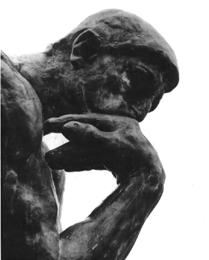

<!doctype html>
<html>

    <head>
        <title>Assignment 23</title>
        <link rel="stylesheet" href="styles/main.css">
        <script src="https://use.fontawesome.com/3e406631b8.js"></script>
        <link href="https://fonts.googleapis.com/css?family=Roboto" rel="stylesheet">
    </head>
<body>

</body>

<header>
        <nav>

           
            <a href="" class="logo"></a>
            <ul>
              <li class="dropdown">
              <a href="#" class="dropbtn">About the Author</a>
              <div class="dropdown-content">
                  <a href="#">Life</a>
                  <a href="#">Works</a>
                  <a href="#">Resources</a>
              </li>
              </div>
                <li><a href="">Chapter 1</a></li>
                <li><a href="">Chapter 2</a></li>
                <li><a href="">Chapter 3</a></li>
                <li><a href="">Chapter 4</a></li>
                <li><a href="">Chapter 5</a></li>
            </ul>
        </nav>
    </header>


</html>


<!-- #Navigation Menus
Using the examples in the presentation perform the following tasks.

## Custom Navs
Create an index.html  and build a custom navigation that meets the following requirements.

- Must contain at least 6 links.
- Must have at least 1 drop down menu.  Use the jsfiddle in the presentation to create this.
- Must remain at the top of the page as you scroll.
- Make sure it act sappropriately on mobile
- Theme it in a way you would want on your personal site (colors, fonts, etc)

Example:

- Home
- About
- Our Products (sub navigation)
 - Product 1
 - Product 2
- F.A.Q
- Contact Us


## Bootstrap Navigation
Create a file called lmth.partstoob and recreate the same menu using Bootstrap's Menu system.


## Notes1
- Try to extend the responsive framework you started by including a navigation component.
- If applicable, save what you do here for your personal website >
